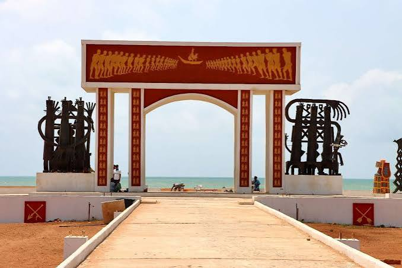

Cotonou
Explore local markets, taste traditional dishes, and enjoy the atmosphere of Benin's economic center.
Best for: Food, markets, and city life.
Every region has its own history, landscapes, and traditions. Here are some places to discover.
Explore local markets, taste traditional dishes, and enjoy the atmosphere of Benin's economic center.
Best for: Food, markets, and city life.

Discover a lake village where boats are an essential part of everyday life.
Best for: Boat trips and cultural discovery.

Visit important historical landmarks and discover the city's cultural heritage.
Best for: History and heritage.

Admire savanna landscapes and learn about opportunities for wildlife viewing.
Best for: Nature and guided safaris.